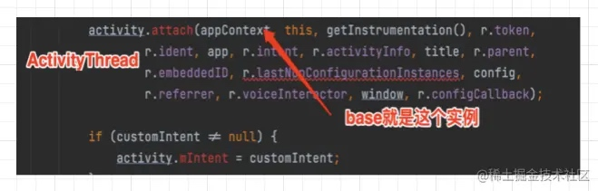
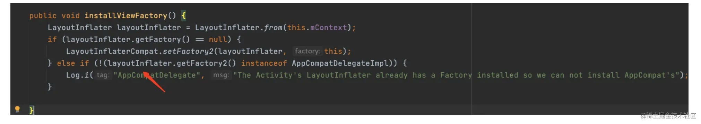

方案调研
目前市面上换肤方案有Resource包装流和AssetManager替换流。
Resource包装流的原理大概如下：
- 创建新的Resrouce对象（代理的Resource）
- 替换系统Resource对象
- 运行时动态映射（原理相同资源在不同的资源表中的Type和Name一样）
- xml布局解析拦截（xml布局中的资源不能通过代理Resource加载，LayoutInflater）
- 优势：
- 支持String/Layout
- 存在问题：
- 资源获取效率有影响
- 不支持style、asset目录
- Resource多出替换,Resource包装类代码量大
- 资源重定向：
- 支持动态映射
AssetManager替换流的原理大概如下：
- hook系统AssetMananger对象（系统资源路径及应用的资源路径 都添加到了AssetManager的Path当中）
- 编译期静态对齐（皮肤包中资源文件对应的id数值修改与应用程序中一致）
- 优势：
- 支持style、asset目录，替换AM实例简洁
- 存在问题：
- 强依赖编译器资源id
- 资源重定向：
- 不支持动态映射
Resource包装流方案
LayoutInflater分析
- LayoutInflater如何实例化
我们通常调用以下代码获得一个LayoutInflater 使用流程
LayoutInflater.from(context)
context一般传的是activity实例
没有找到inflater_service的name，再看看父类
关键点是getBaseContext()返回的实例，通过分析上下文可知，getBaseContext()返回的是ContextWrapper的成员变量，且在attachBaseContext方法传进，如下图所示
因为Activity是在ActivityThread中通过反射实例的，所以在ActivityThread找到如下代码

通过以上可知appContext这个参数的实例是ContextImpl
根据上图追踪，LayoutInflater的实例生成下图所示
- View如何通过LayoutInflater生成，如下图所示
通过对LayoutInflater这个类的分析，我们可以在蓝色部分设置factory的实例来拦截系统View生成，所以我们可以在factory对应实例的方法createView
通过类似于黄色部分的实现逻辑实例出View,再通过动态映射资源达到替换xml默认的资源
- 使用factory
所以我们使用LayoutInflater的setFactory、setFactory2这两个方法在对应的实例做我们业务的拦截处理即可,这两个方法的功能基本是一致的，setFactory2是在SDK>=11以后引入的，所以我们要根据SDK的版本去选择调用上述方法。
v4包下有个类LayoutInflaterCompat帮我们完成了兼容性的操作，提供的方法为：
LayoutInflaterCompat
- setFactory(LayoutInflater inflater,
LayoutInflaterFactory factory)
AppCompatActivity冲突处理
- 内部使用了LayoutInflater的setFactory2，流程大概如下所示
通过上面分析，其内部的逻辑跟我们换肤逻辑一样
- 异常处理
如果我们在AppCompatActivity onCreate()之后设置LayoutInflaterCompat.setFactory2会抛出一下异常
通过代码分析可知
LayoutInfalter调用过setFactory或者setFactory2的话，下一次调用的话就会跑出异常。
那么我们在AppCompatActivity onCreate()之前设置LayoutInflaterCompat.setFactory2呢？，通过源码分析可知

虽然这样不会跑出异常，但是就不会执行到AppCompatDelegateImpl的onCreateView方法，相当于AppCompatDelegateImpl设置的factory失效。所以我们需要在我们自己factory来做对AppCompatDelegateImpl的factory的处理。因为AppCompatDelegateImpl的下面的这个方法是
所以我们可以在我们factory处理逻辑调用AppCompatDelegate调用下面方法来处理解决上面的情况
View view = delegate.createView(parent, name, context, attrs);
所以处理处理逻辑大概如下所示
LayoutInflaterCompat.setFactory(LayoutInflater.from(this), new LayoutInflaterFactory()
{
@Override
public View onCreateView(View parent, String name, Context context, AttributeSet attrs)
{
//你可以在这里直接new自定义View
//你可以在这里将系统类替换为自定义View
//appcompat 创建view代码
AppCompatDelegate delegate = getDelegate();
View view = delegate.createView(parent, name, context, attrs);
return view;
}
});
补充一点，因为我们的业务涉及到切包，我们无法确认游戏方的代码是否使用到了AppCompatActivity，同时涉及到support和androidx的兼容包，上面的
//appcompat 创建view代码
AppCompatDelegate delegate = getDelegate();
View view = delegate.createView(parent, name, context, attrs);
用了反射来处理这种兼容性问题。
所以处理方式应该是：
- 不考虑兼容AppCompatActivity：只需要在
Activity setContentView之前直接设置我们自定义的factory。 - 考虑兼容AppCompatActivity：在
AppCompatActivity onCreate()之前调用我们我们自定义的factory，然后在我们自定义的factory调用AppCompatActivity的方法来兼容AppCompatActivity原来的处理。
xml->view实例的细节分析
- xml中的系统View不需要前缀能加载到？
因为在PhoneLayoutInflater中申明了一个字段
private static final String[] sClassPrefixList = {
"android.widget.",
"android.webkit.",
"android.app."
};
然后在onCreateView(String name, AttributeSet attrs)中先加上前缀去加载，如下图所示
for (String prefix : sClassPrefixList) {
try {
View view = createView(name, prefix, attrs);
if (view != null) {
return view;
}
} catch (ClassNotFoundException e) {
// In this case we want to let the base class take a crack
// at it.
}
}
return super.onCreateView(name, attrs);
在父类中还有一个前缀是android.view.
protected View onCreateView(String name, AttributeSet attrs)
throws ClassNotFoundException {
return createView(name, "android.view.", attrs);
}
- 自定义view为什么需要声明两个参数的构造方法
因为在LayoutInflater的createView(String name, String prefix, AttributeSet attrs)方法中，反射对应的Constructor是需要Context.class和AttributeSet.class的参数类型，否则会抛异常，关键代码
Object lastContext = mConstructorArgs[0];
if (mConstructorArgs[0] == null) {
// Fill in the context if not already within inflation.
mConstructorArgs[0] = mContext;
}
Object[] args = mConstructorArgs;
args[1] = attrs;
final View view = constructor.newInstance(args);
- 看源码过程中，view的
parames是通过parentview的方法生成的，params = root.generateLayoutParams(attrs)，然后通过解析xml的内容设置对应属性的值之前一直以为parames是在view本身的方法生成的，后来也了解了一下。一些屏幕适配方案，就是通过重写generateLayoutParams来处理。
开发业务流程
大概需要处理的业务如下
- 在每个activity的oncreate方法调用SkinManager初始化方法。
- SkinManager初始化方法注册我们需要换肤的View。
- 在我们自定义的Factory实现类oncreateview方法中模仿系统加载的机制来加载我们的换肤View和获取对应的资源属性和值。
- 根据获取到的资源值动态映射加载外部换肤资源，原理就是通过获取资源的id，得到资源对应的资源string，再通过string查到加载外部资源的路径。